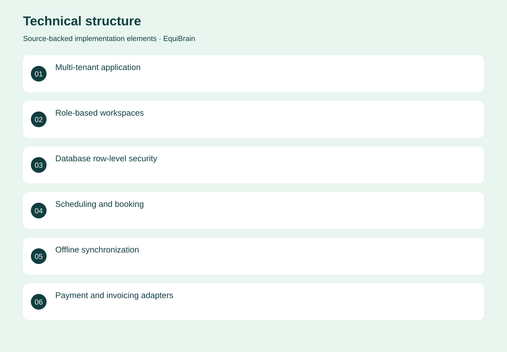
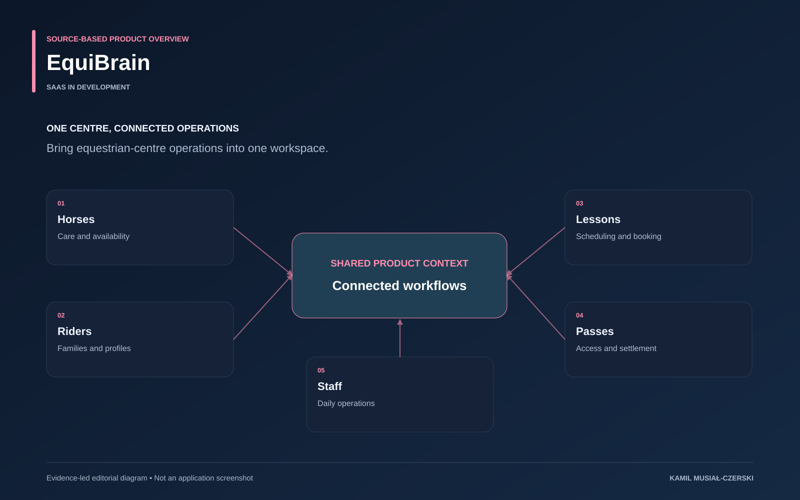

The project
The application models a centre as interconnected horses, riders, families, instructors and operational staff. Booking, passes, waitlists and daily activities share persistent records, while role and tenant boundaries are enforced beyond navigation. The PWA supports selected durable offline writes and reconciliation. The current Next.js and Prisma implementation continues the earlier Rideflow product history.
The problem
Equestrian centres coordinate interconnected people, horses, lessons and operational tasks.
The solution
Role-specific workspaces connect scheduling and operational records with tenant-scoped access, persistent data and selected offline workflows.
My contribution
Implemented role-specific stable operations, booking and pass workflows, tenant isolation and selected offline synchronization.
Technical structure

Product overview

The portfolio cover is an editorial illustration. No live product screenshot is presented for this project.
Showcase assets
{kind=link}
{kind=link}
{kind=link}
Existing product identity. Newly designed marks are portfolio treatments, not claims of official client branding.